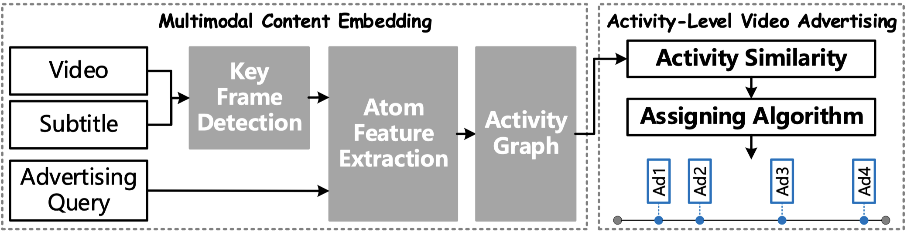
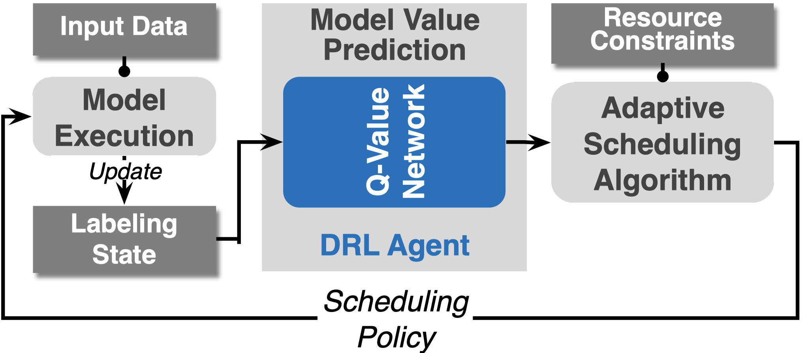
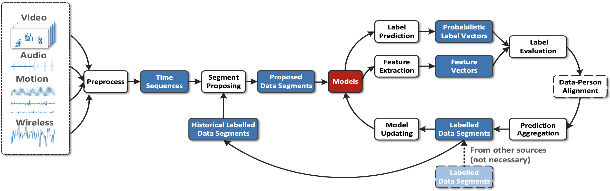
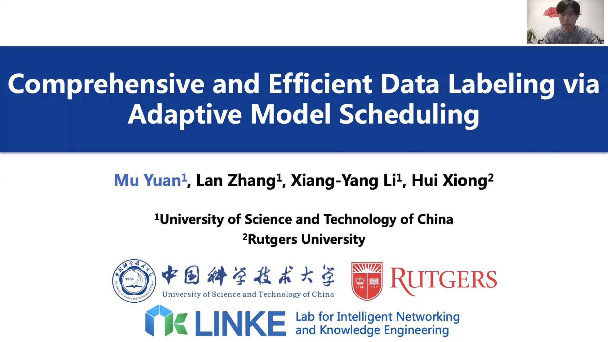
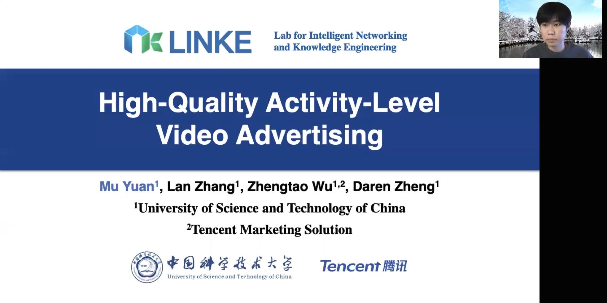

PhD Student @ USTC
LINKE Lab
Department of Computer Science and Technology
University of Science and Technology of China
My research interests are AIoT and model serving systems.

High-quality Activity-Level Video Advertising
Mu Yuan, Lan Zhang, Zhengtao Wu, Daren Zheng
IWQoS 2020
Video Presentation Awards

Comprehensive and Efficient Data Labeling via Adaptive Model Scheduling
Mu Yuan, Lan Zhang, Xiang-Yang Li, Hui Xiong
ICDE 2020

Labelling and Learning Unknown Activities Among Multimodal Sensing Data
Lan Zhang, Daren Zheng, Zhengtao Wu, Mengjing Liu, Mu Yuan, Feng Han, Xiang-Yang Li
MobiCom 2019

Optimizing Multi-Model Inference by Adaptive Scheduling
Data Mining and Knowledge Discovery Track, ICDE 2020
Official Link
| Bilibili
| Slides

Activity-Level Video Advertising System
Session 2C, Video Track, IWQoS 2020
Bilibili
| Slides